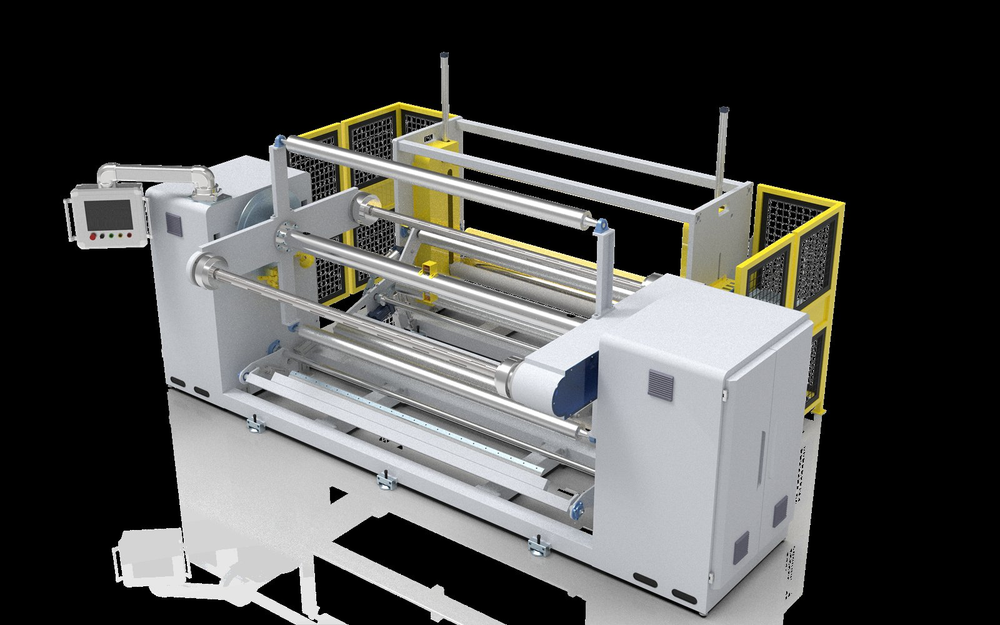

Supporting Equipment
Controlled edge-waste collection beside the converting line.
This compact edge trim rewinder is intended for project-based integration with slitting and converting equipment. Its frame, roll width, drive and controls can be discussed according to waste-strip characteristics.
- Compact mobile frame for flexible line-side placement
- Controlled rewinding of edge trim or narrow waste material
- Configuration based on material, strip width and production speed
- Suitable for integration with nonwoven, paper and film converting lines

Operation Videos
Real running footage for auxiliary automation review.
These short videos help buyers understand the working sequence before requesting a custom layout. Final equipment selection depends on parent-roll width, shaft size, material weight and available floor space.